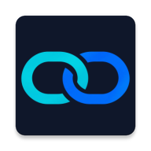

ANDROID · SHIFT HANDOFF
PROJECT 01 / CAPSTONE
Continuum
An Android application designed to help teams document shift handoffs, track unresolved items, and maintain continuity between shifts. My contributions include handoff features, notifications, a supervisor dashboard, and trends and analytics.
Read project updates ↗